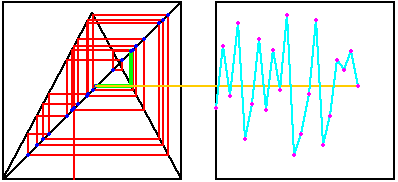

| A time series plot of a sequence
x0, x1, x2, x3, ... consits of plotting the points |
| (0, x0), (1, x1),
(2, x2), (3, x3), ... |
| Some kinds of time patterns are easily visible with such plots;
others are not. Nevertheless, this is the standard representation of EKG, EEG, financial,
seismological, and many other kinds of data. |
|  |
| Click on the picture to see how graphical iteration
(left window) of the Tent Map generates
the time series graph (right window). |
| To illustrate the sorts of things we can learn from a time series, here are
some tent map examples, illustrating differnt dynamical behaviors. |
|